Enzo Suils
Estudiante y Analista Técnico de Soporte Semi-Senior
Sobre mí
Me llamo Enzo Suils. Vivo en Capital Federal, barrio de Caballito y tengo 27 años. Nací en Comodoro Rivadavia, provincia de Chubut.
Experiencia
Zipnova | Analista de Soporte Técnico e Integraciones
Octubre 2022 – Presente
- Gestión y resolución de tickets de soporte técnico Nivel 2/3 para clientes B2B mediante Zendesk CRM.
- Administración y automatización de Zendesk: Configuración integral del entorno de agente (triggers, automatizaciones, integraciones API) e implementación de Zendesk Advanced AI (ex Ultimate) mediante diseño de diálogos y procedimientos.
- Documentación Técnica & Help Center: Creación y administración de recursos y artículos de ayuda técnicos para clientes sobre la suite de productos de Zipnova.
- Procesamiento de Datos & Automatización: Adaptación y carga de tarifarios personalizados de clientes en Google Sheets/Excel, y desarrollo de planillas automatizadas con scripts integrando consultas públicas de Metabase.
- Reporting & Bases de Datos: Creación de dashboards en Zendesk Explore para análisis de métricas y ejecución de consultas SQL en Metabase para obtención y validación de datos.
- Onboarding & E-commerce: Onboarding y configuración de entornos para clientes en Zipnova Rutas, e implementación de soluciones en plataformas e-commerce (Shopify, Tiendanube, VTEX, WooCommerce).
- Pruebas técnicas: Consumo y prueba de endpoints REST API mediante clientes HTTP para la validación de integraciones y flujos internos.
Tap (Billetera Virtual) | Analista de Atención al Cliente & Soporte
Diciembre 2021 – Septiembre 2022
- Gestión de atención a usuarios finales a través de la plataforma de mensajería AsisteClick.
- Registro, priorización y escalamiento de tickets de incidentes y requerimientos técnicos en Jira.
- Extracción y validación de información de transacciones e historial de usuarios mediante ejecuciones de consultas SQL.
Hobbies
Videojuegos
Juegos de terror. Sagas como Silent Hill, Fatal Frame y Resident Evil

Modelos 3D y Animaciones
Modelado y animado de personajes 3D, utilizando Blender.

Informática en general
Armado y reparación de computadoras
Contacto
- E-mail:enzo.suils@outlook.com
- Número de teléfono:+54 9 2974090592
© 2026 - Todos los derechos reservados.